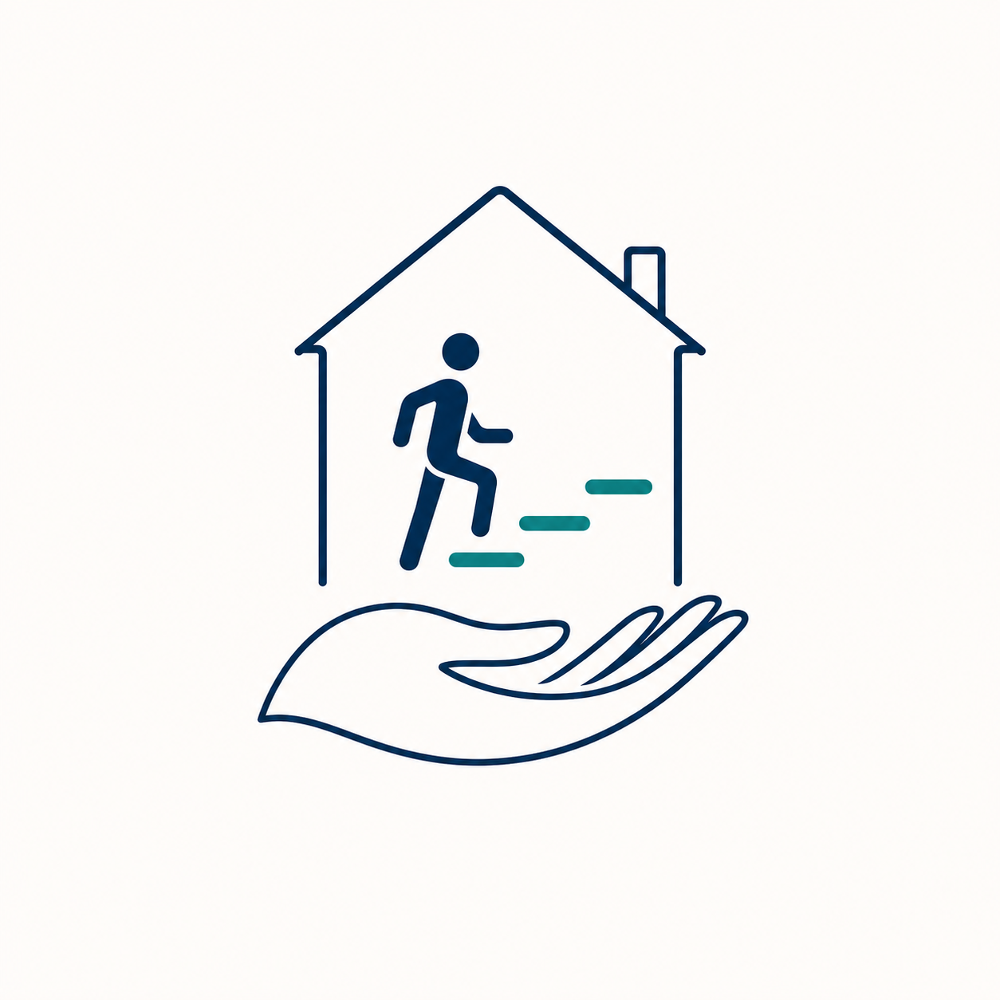

Immutable supplied PNG

HISTORICAL — SVG DIRECTION DEPRECATED; DO NOT USE
Experienced care. Personal progress. At home.
PROPOSED — NOT FOR PUBLIC USE

The production cleanup keeps the supplied composition while replacing raster glow, blur and background with editable vector geometry and approved brand colours.